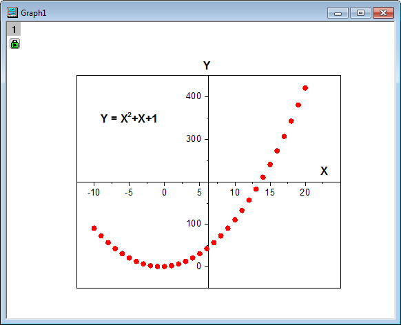
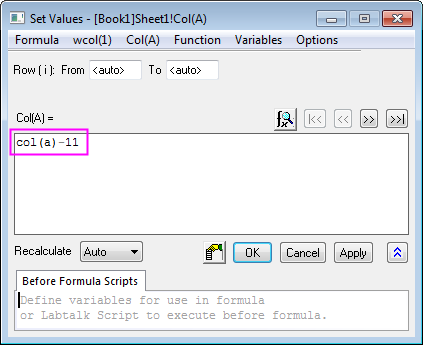
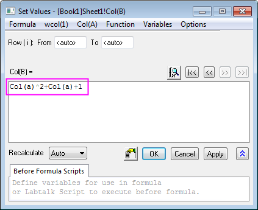
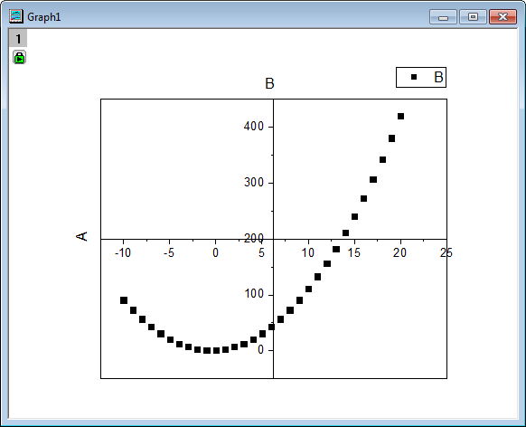
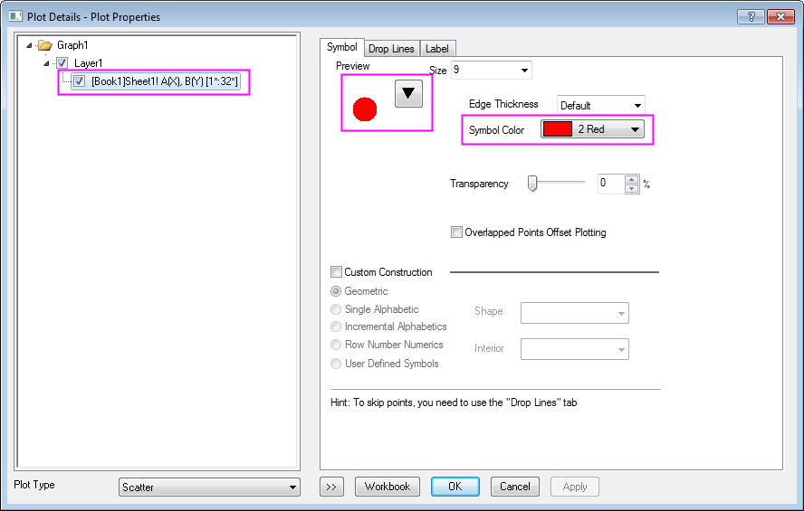
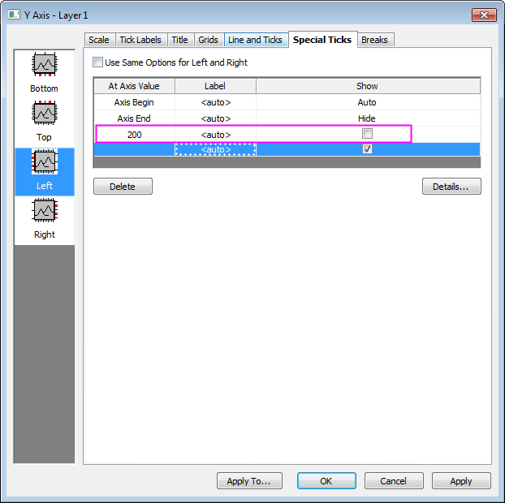
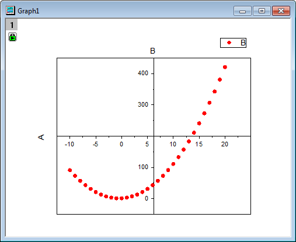
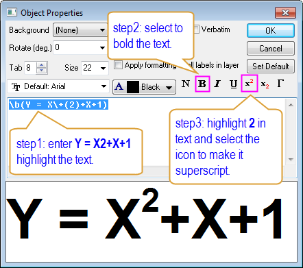

Punktdiagramm mit zentriertem Ursprung
Scatter-Central-Plot
Zusammenfassung
Das Punktdiagramm mit dem zentrierten Ursprung ist ein Diagramm, bei dem die X- und Y-Achse sich in der Mitte des Layers befinden. In diesem Tutorial wird ein Punktdiagramm mit zentriertem Ursprung erstellt, und dann werden das Symbol und die Achsen benutzerdefiniert angepasst.
- 
Origin-Version mind. erforderlich: Origin 2015 SR0
Was Sie lernen werden
- Spaltenwerte mit Hilfe des Dialogs Werte setzen festlegen
- Punktdiagramm mit zentriertem Ursprung erstellen
- Farbe und Form der Punkte ändern
- Beschriftung von Hilfsstrichen an Achsen benutzerdefiniert anpassen
Schritte
- Öffnen Sie ein leeres Arbeitsblatt mit zwei Spalten. Sie werden eine Arbeitsblattspalte mit Werten füllen, indem Sie den Dialog Werte setzen verwenden.
- Markieren Sie Spalte A, klicken Sie mit der rechten Maustaste und wählen Sie Spalte füllen mit: Zeilennummern im Kontextmenü. Klicken Sie mit der rechten Maustaste nochmals auf Spalte A und wählen Sie Spaltenwerte errechnen, um den Dialog Werte setzen zu öffnen. Geben Sie This - 11 in das Textfeld ein und klicken Sie dann auf die Schaltfläche Anwenden, um das Festlegen der Werte für Spalte A fertigzustellen.
- 
- Klicken Sie auf die Schaltfläche , um Spalte B im Dialog Werte setzen auszuwählen. Geben Sie dieses Mal A^2 + A + 1 im Textfeld ein. Klicken Sie dann auf OK, um die Werte für Spalte B zu setzen.
- 
- Markieren Sie Spalte B und wählen Sie Zeichnen: Einfache 2D: Punktdiagramm mit zentriertem Ursprung im Origin-Menü. Ein Punktdiagramm mit zentriertem Ursprung wird erstellt.
- 
- Ändern Sie die Farbe und Form der Punkte. Klicken Sie doppelt auf das Punktdiagramm, um den Dialog Details Zeichnung zu öffnen, erweitern Sie den Zweig Layer1 im linken Bedienfeld und markieren Sie die Unterknoten. Klicken Sie auf der Registerkarte Symbole des rechten Bedienfelds auf die nach unten weisende dreieckige Schaltfläche neben Vorschau und wählen Sie das Symbol des gefüllten Kreises. Klicken Sie dann auf die Schaltfläche neben Symbolfarbe und wählen Sie Individuell: Rot. Bestätigen Sie mit OK, um den Dialog Details Zeichnung zu schließen.
- 
- Jetzt passen Sie die Achsen benutzerdefiniert an. Klicken Sie doppelt auf die Y-Achse, um den Dialog Achsen zu öffnen. Legen Sie auf der Registerkarte Skalierung für die Y-Achse den Wert für Bis auf 450 fest.
- Klicken Sie auf die Registerkarte Spezielle Hilfsstriche, geben Sie 200 in die Spalte Bei Achsenwert unter Achsenende ein und deaktivieren Sie das entsprechende Kontrollkästchen in der Spalte Zeigen, um die speziellen Hilfsstriche, wie im Folgenden zu sehen, anzuzeigen:
- 
- Klicken Sie auf das Symbol Unten im linken Bedienfeld und markieren Sie die Zeile Achsenende. Wählen Sie dann in der Auswahlliste in der Spalte Zeigen die Option Zeigen.
- Klicken Sie auf OK, um die Achseneinstellungen fertigzustellen. Das Punktdiagramm mit zentriertem Ursprung sieht folgendermaßen aus.
- 
- Entfernen Sie jetzt die Legende und ändern Sie die Beschriftung der Achsen, A in X und B in Y. Machen Sie den Text fett.
- Klicken Sie mit der rechten Maustaste auf die Beschriftung der X-Achse und wählen Sie im Kontextmenü Einstellungen. Wählen Sie 0 in der Auswahlliste Drehen (Grad) und klicken Sie auf OK. Verschieben Sie das X an das Ende der X-Achse. Fügen Sie das Textobjekt Y = X2 + X + 1 hinzu und passen Sie es benutzerdefiniert als an, indem Sie die folgenden Schritten durchführen:
- 
- Das endgültige Diagramm sieht folgendermaßen aus.